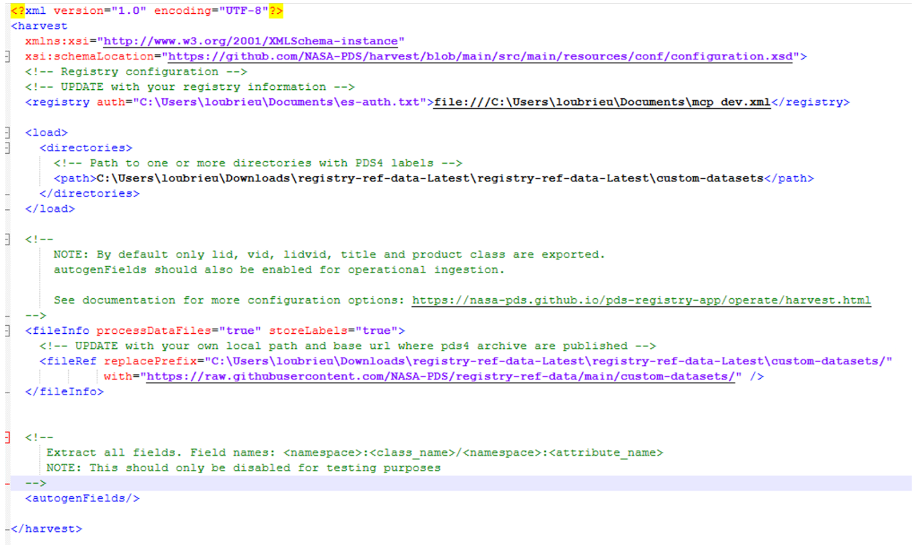

Load Data - Harvest
Harvest extracts metadata from PDS4 product labels and loads it into the Registry (OpenSearch).
Before You Begin
Connection to the registry service configured per Connection Setup
Harvest installed per Installation
Configure a Harvest Job
Harvest uses an XML job configuration file. Example configs ship with the Harvest installation
under $HARVEST_HOME/conf/examples/ (where $HARVEST_HOME is the directory you extracted
Harvest into per Installation).
Copy the example config to
$HOME/.pds/, naming it to include the venue (dev,test, orprod) and the job (e.g. a mission name likelroormars2020):cp $HARVEST_HOME/conf/examples/directories.xml $HOME/.pds/registry-harvest-config-{venue}-{job}.xml
Open
$HOME/.pds/registry-harvest-config-{venue}-{job}.xmland set the<registry>element to point to your auth file and connection config file for this venue:<registry auth="$HOME/.pds/registry-auth-{venue}.txt">file://$HOME/.pds/registry-config-{node}-{venue}.xml</registry>
Set the path to your PDS4 data:
<load> <directories> <path>/path/to/your/data</path> </directories> </load>
Set the URL prefix to replace local file paths with the publicly accessible base URL where your archive is published:
<fileInfo> <fileRef replacePrefix="/local/data/path/" with="https://your-node.example.com/data/" /> </fileInfo>
See Detailed Harvest Configuration for all available configuration options.
Note
On Windows, use backslash-style paths. See the example screenshot below:

Run Harvest
Run Harvest with your job config:
harvest -c $HOME/.pds/registry-harvest-config-{venue}-{job}.xml
Review the log output. A successful run ends with a summary similar to:
[SUMMARY] Summary: [SUMMARY] Skipped files: 0 [SUMMARY] Processed files: 14 [SUMMARY] File counts by type: [SUMMARY] Product_Bundle: 1 [SUMMARY] Product_Collection: 4 [SUMMARY] Product_Context: 3 [SUMMARY] Product_Document: 2 [SUMMARY] Product_Observational: 4 [SUMMARY] Package ID: e46f6ba9-6151-48ee-b822-b0536e3e4bd9
Optionally, verify data was loaded by querying your index per Test Your Registry Connection.
Warning
Due to indexation delays, loaded data may take up to a few hours to become visible.
Next Steps
See all Harvest options:
harvest -helpAdditional job config options: Detailed Harvest Configuration
Publish loaded data: Update Archive Status